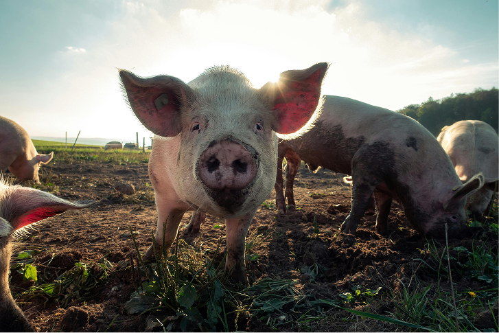
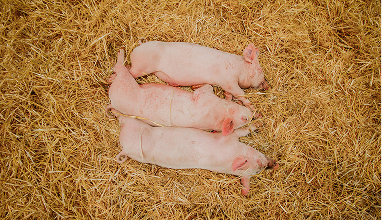
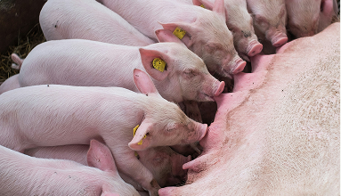
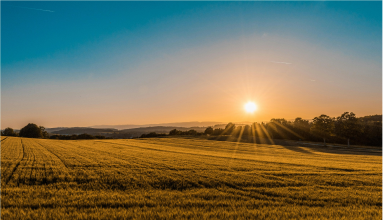

Programa de Ergonomia e Biosseguridade Ocupacional • Suinocultura
Unidade: Maternidade & Manejo Reprodutivo
Ergonomia & Bem-Estar na Suinocultura
Ergonomia do trabalho
Ergonomia & Bem-Estar na Suinocultura
Este projeto foi desenvolvido para promover mais saúde, segurança e qualidade de vida no ambiente de trabalho, por meio de orientações simples e acessíveis. A plataforma reúne informações sobre postura, prevenção de dores, exercícios, alongamentos, pausas ativas e movimentação de cargas, ajudando os trabalhadores a cuidar melhor do corpo.
 Painel de exercicios
Rotina da suinocultura
Painel de exercicios
Rotina da suinocultura
Fundamentação técnica
Oque é ergonomia
A ergonomia busca tornar o trabalho mais seguro, confortável e adequado às necessidades do trabalhador.
Por meio de cuidados com a postura, movimentos, organização das atividades, pausas e uso correto dos equipamentos, é possível reduzir sobrecargas, prevenir dores e contribuir para mais saúde e qualidade de vida durante a jornada de trabalho.
Cuidar do movimento hoje é transformar a saúde de amanhã.
Conforto nas instalações
Adequação física aos processos de parto, medicação de leitões e desmame.
Prevenção Ativa
Redução drástica de sobrecargas e dores na coluna lombar e joelhos.
Qualidade de vida
Manutenção da integridade física com aumento de produtividade e bem-estar.

Análise do Ponto Crítico
1. Acesso ao Escamoteador
A contenção e medicação de leitões exigem flexão da coluna lombar. Mantenha o corpo próximo à baia, flexione os joelhos e evite torções.
Orientação: Apoie um dos membros inferiores para distribuir o peso e alterne o lado
Rotina operacional
Manejo real na suino cultura
A preservação da saúde postural do trabalhador em cada etapa da produção

Manejo no Escamoteador
Içamento seguro no processamento e vacinação, aproximando os animais do corpo para proteger a coluna lombar

Acompanhamento de Partos
Mantenha os joelhos flexionados e utilize apoio adequado ao inspecionar as matrizes e leitões lactantes.

Ambiente e Campo
Postura ereta e passos firmes durante o monitoramento da granja e instalações a céu aberto.
DIRETRIZES PRÁTICAS
Postura no trabalho
Uma postura adequada ajuda a reduzir a sobrecarga sobre a coluna, músculos e articulações
Ao Trabalhar em pé
- Mantenha os pés apoiados e estáveis.
- Distribua o peso do corpo entre as duas pernas
- Evite permanecer parado na mesma posição por muito tempo.
- Alterne as atividades sempre que possível.
Ao Trabalhar inclinado
- Evite permanecer com o tronco curvado por longos períodos.
- Aproxime o corpo do local de trabalho.
- Evite movimentos repetidos de flexão e rotação da coluna.
- Quando possível, ajuste a altura ou utilize apoio.
Ao pegar objetos
- Aproxime-se da carga.
- Flexione os joelhos e mantenha os pés firmes.
- Mantenha a carga próxima ao corpo.
- Evite girar o tronco enquanto segura peso.